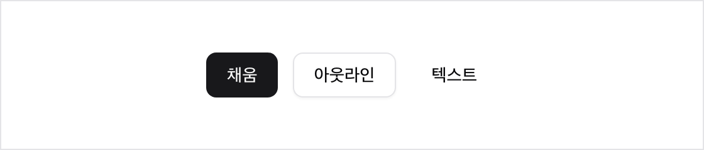
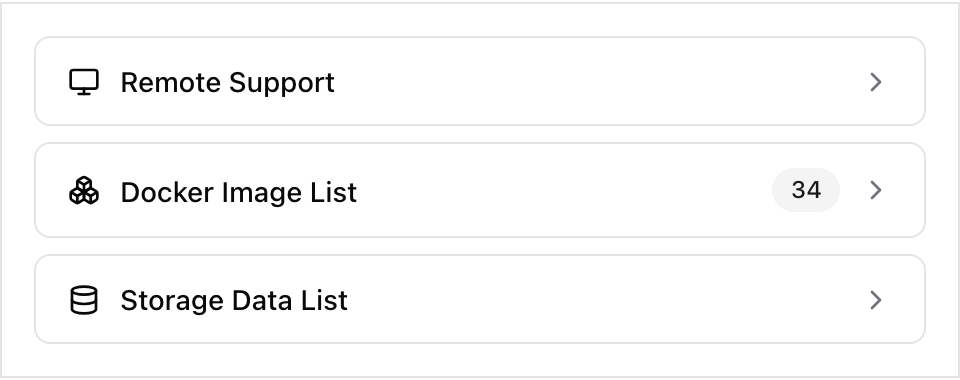

팔레트
토큰
| 토큰 | 용도 |
|---|---|
--bg | 페이지·패널 배경 |
--ink | 기본 텍스트, 활성·hover 항목 |
--nav-rest | 내비 기본 상태 (진한 회색) |
--muted | 보조 텍스트, 비활성 리스트 항목 |
--chev-rest | 선택 전 셰브론. 텍스트보다 훨씬 옅게 둔다 |
--line | 모든 구분선·테두리·아웃라인 박스 |
--surface | 연회색 채움 — 내비 hover, 커맨드 팔레트 활성 행, 보조 버튼, Esc 칩 |
--inverse-bg / fg | 주요 CTA (화면당 1개) |
서체
| 환경 | 서체 | 설명 | 다운로드 |
|---|---|---|---|
| Apple 기기 (원본) | SF Pro Text / SF Pro Display | Apple 시스템 서체 | developer.apple.com/fonts |
| 웹·크로스플랫폼 대체 | Inter | SF Pro와 가장 가까운 오픈소스 서체 | rsms.me/inter |
| 한글 | Pretendard | 라틴 자소가 Inter 계열이라 혼용 시 이질감이 적다 | github.com/orioncactus/pretendard |
원본은 별도 웹폰트를 싣지 않고 -apple-system으로 OS 서체를 그대로 부른다. 재현할 때의 CSS 스택:
font-family: -apple-system, BlinkMacSystemFont, "SF Pro Text",
Inter, "Apple SD Gothic Neo", Pretendard, sans-serif;스케일
| 역할 | 크기 | 굵기 | 색 |
|---|---|---|---|
| 본문 | 16px / 1.6 | 400 | ink |
| 내비 | 15px | 400 | nav-rest → ink |
| 패널 제목 | 15~16px | 400 | ink |
| 리스트 항목 | 15px | 400 | muted → ink |
| 번호 라벨 | 11px | 400 | muted, 모노스페이스 |
| 섹션 라벨 | 11~12px | 400~500 | muted, 대문자 +0.08em |
규격
| 항목 | 값 | 비고 |
|---|---|---|
| 선 두께 | 1px | 예외 없음 |
| 선 색 | --line | 예외 없음 |
| 라운드 (채움 버튼·칩) | 3~4px | 검정 CTA, 연회색 버튼, Esc 칩 |
| 라운드 (아웃라인 박스) | 0px | 각진 모서리. 내비 활성, 레일 hover |
| 라운드 (앱 아이콘) | 8px | 콘텐츠 요소 |
| 그림자 | 없음 | 모달에도 없다 |
라운드 규칙이 채움과 아웃라인에서 다르다. 배경을 채우는 요소는 3~4px로 살짝 둥글게, 테두리만 있는 선택·hover 박스는 각지게(0px) 둔다. 아웃라인 박스를 둥글게 만들면 격자 선과의 각진 대비가 무너져 즉시 다른 시스템처럼 보인다.
실측값
뷰포트 폭 약 1480px 기준 역산값.
| 항목 | 값 | 항목 | 값 |
|---|---|---|---|
| 상단 내비 높이 | 60px | 리스트 행 높이 | 44~50px |
| 컬럼 헤더 스트립 | 58px | 행 아이콘 | 32px |
| 하단 푸터 스트립 | 58px | 번호 ↔ 제목 간격 | 10px |
| 컬럼 좌우 패딩 | 20~24px | 내비 항목 패딩 | 4px 9px (타이트) |
앱 셸
┌──────────────────────────────────────────────────────┐
│ Home Clips Community [Jobs] [Search] [Filter] ■ │ 60px, 하단 1px 선
├────────────┬────────────────────┬────────────────────┤
│ 제목 액션 │ 제목 Esc │ 제목 │ 58px, 하단 1px 선
├────────────┼────────────────────┼────────────────────┤
│ 리스트 │ 본문 │ 비주얼 / 부가 │ 가변, 사이 1px 선
├────────────┼────────────────────┼────────────────────┤
│ 9 Companies│ 7 Positions ‹ › │ │ 58px, 상단 1px 선
└────────────┴────────────────────┴────────────────────┘- 내비: 좌측 메뉴 / 중앙 액션 / 우측 CTA 3분할.
- 컬럼 수는 화면마다 다르다. 목록형 2컬럼, 상세형 3컬럼.
- 고정 그리드가 아니다. 관찰값 — 좌 280~340px, 중앙 가변, 우 340~540px.
- 모든 컬럼이 헤더·푸터 스트립을 공유한다.
목록 → 상세 전환
좌측에서 항목을 고르면 페이지 전체가 스크롤되는 것이 아니라 가운데 컬럼만 바뀐다. 가운데 헤더 스트립에 선택한 항목의 제목이 뜨고 그 아래에 해당 내용만 나타난다. 좌측 목록은 자리를 지키고 선택된 항목만 검정 + 밑줄로 바뀐다. 헤더 우측의 Esc로 목록 상태로 돌아간다. 이 페이지도 같은 방식으로 동작한다.
격자 그리드
4열 그리드. 셀 사이에 gap을 두지 않고 1px 선으로 격자를 그린다. 카드가 아니라 표에 가깝다.
내비 항목 — 3단계
hover는 연회색 채움, 활성은 각진 1px 테두리 박스. 활성 박스의 테두리는
--ink가 아니라 --line(연회색)이다 — 텍스트만 검정으로 올리고 박스는 옅게 둔다.
<nav class="navdemo">
<span>Home</span>
<span class="sel">Jobs</span> <!-- 활성: ink 텍스트 + 1px --line 박스 -->
</nav>
.navdemo span { color: var(--nav-rest); padding: 4px 9px;
border: 1px solid transparent; border-radius: var(--r-box); cursor: pointer; }
.navdemo span:hover { color: var(--ink); background: var(--surface); } /* hover: 채움 */
.navdemo span.sel { color: var(--ink); border-color: var(--line);
background: none; } /* 활성: 박스 */리스트 행 — hover와 선택이 서로 다른 수단
hover는 박스, 선택은 밑줄. 두 상태가 동시에 걸려도 서로를 가리지 않는다. 커맨드 팔레트 결과 목록만 예외로 연회색 채움을 쓴다 — 키보드로 빠르게 훑는 목록이라 덩어리로 인지되는 편이 낫다.
<div class="row"><span class="grow">항목</span><span class="hchev"></span></div>
.row { display: flex; align-items: center; gap: 12px; height: 48px; padding: 0 12px;
border: 1px solid transparent; border-radius: var(--r-box); color: var(--muted); cursor: pointer; }
.row:hover { border-color: var(--line); } /* hover: 각진 1px 박스만 */
.row.sel { color: var(--ink); } /* 선택: ink + 밑줄, 박스 없음 */
.row.sel .grow { text-decoration: underline; text-underline-offset: 3px; }
.row.sel .hchev { background-color: #000; } /* 셰브론도 함께 검정 */
/* 커맨드 팔레트 결과만 다른 규칙 — 채움, 테두리·밑줄 없음 */
.row.palette:hover { border-color: transparent; background: var(--surface); color: var(--ink); }버튼 — 4종만 존재
채움은 검정과 연회색 두 가지뿐이다. 컬러 버튼이 존재하지 않는다. 아웃라인은 각지게, 채움 버튼은 4px 라운드. 인버스(검정)는 화면당 1개. 연회색 채움은 "누를 수 있지만 주요 행동은 아닌 것"에 쓴다.
<button class="b outline">Search</button>
<button class="b inverse">Join SIP</button> <!-- 화면당 1개 -->
<button class="b subtle">Follow</button>
<button class="b">Post a job</button>
.b { padding: 8px 20px; border: 1px solid transparent; background: none; color: var(--ink); }
.b.outline { border-color: var(--line); border-radius: var(--r-box); } /* 각짐 */
.b.inverse { background: var(--inverse-bg); color: var(--inverse-fg);
border-radius: var(--r-fill); } /* 4px 라운드 */
.b.subtle { background: var(--surface); border-radius: var(--r-fill); }
.b:hover:not(.inverse) { background: var(--surface); }
.b.inverse:hover { opacity: .85; }픽셀 셰브론
이 시스템의 서명이다. 셰브론과 방향 화살표가 매끈한 벡터가 아니라 1×1 픽셀 5개가 모서리에서만 닿으며 대각선으로 이어진 비트맵으로 렌더링된다.
viewBox 0 0 5 7 · 렌더 10×14px · shape-rendering=crispEdges
rect(x, y, w=1, h=1) 5개:
(1,1) (2,2) (3,3) (2,4) (1,5)렌더 크기는 viewBox의 정수배로 둔다. 점을 늘리거나 크기를 줄이면 굵고 성근 인상이 사라진다. 적고 굵게가 원칙이다. 픽셀 질감은 셰브론과 화살표에만 쓰이고 다른 UI 요소는 전부 깨끗한 1px 선이다.
필터 칩 · Esc 칩
선택된 칩은 각진 1px 테두리 박스, 나머지는 텍스트만. Esc 칩은 연회색 채움에 muted 텍스트로 패널·모달 헤더 우측에 상시 노출된다.
<button class="b chip sel">Any</button> <!-- 선택: 각진 1px 박스 -->
<button class="b chip">Engineering</button> <!-- 나머지: 텍스트만 -->
<span class="b subtle">Esc</span> <!-- 연회색 채움 · 상시 노출 -->
.chip { color: var(--nav-rest); }
.chip.sel { color: var(--ink); border-color: var(--line); border-radius: var(--r-box); }모달
- 배경: dim 아님. backdrop-filter로 강하게 blur만 건다.
- 패널: 흰 배경, 1px 테두리, 그림자 없음, radius 거의 없음.
- 폭: 검색 모달 약 680px, 필터 모달 약 640px.
- 내부는 가로 1px 선으로 구역을 나눈다.
카드
도구 페이지(HiNAS DS · 365 분석)에서 쓰는 두 가지 카드 패턴이다. 본문과 같은 문법 — 1px 선 · 각진 모서리 · 도트 여백 — 을 그대로 따른다.


<div class="comp-card">
<div class="head">컴포넌트 이름</div>
<div class="vis">
<div class="ph">…</div> <!-- 기본: 도트 배경 + 플레이스홀더 -->
<div class="cropwin"><img …></div> <!-- hover: 크롭 창 (상한 86%) -->
</div>
<div class="chips"><span>○ 있음</span><span>shadcn: Button</span></div>
</div>
.vis { aspect-ratio: 16/10; display: flex; align-items: center; justify-content: center;
background-image: radial-gradient(#d9d9d9 1px, transparent 1px); background-size: 8px 8px; }
.vis .cropwin { display: none; width: 78%; border: 1px solid var(--line); }
.comp-card:hover .ph { display: none; }
.comp-card:hover .cropwin { display: block; } /* 사방에 도트 여백이 남는다 */디자인 시스템을 준수하는 동작하는 목업 페이지가 생성되고,
<div class="stepcard">
<div class="shotbox">…</div> <!-- 4:3 도트 배경 + 1px 선 -->
<div class="stepcap">
<span class="n">1</span><p>한 문장 캡션</p>
</div>
</div>
.shotbox { aspect-ratio: 4/3; border: 1px solid var(--line);
background-image: radial-gradient(#d9d9d9 1px, transparent 1px); background-size: 8px 8px; }
.stepcap { display: flex; gap: 10px; } /* 원형 번호 배지 + 캡션이 ①→②→③ 흐름을 만든다 */규칙
- 상태 변화는 테두리 유무 · 밑줄 · 연회색 채움 셋으로만 표현한다. 색상(hue)은 바꾸지 않는다.
- hover와 선택에 서로 다른 수단을 배정한다. 겹쳐도 정보가 손실되지 않는다.
- 모달 진입 시 배경 blur. 닫기는
Esc또는 우측 상단 칩. - 픽셀 셰브론이 "더 있음"의 유일한 표식이다. 화살표·플러스 등 다른 기호를 섞지 않는다.
- 로딩·빈 상태에서도 격자 선은 유지된다.
CSS 변수
:root {
/* color */
--sip-bg: #ffffff;
--sip-ink: #111111;
--sip-nav-rest: #6b6b6b; /* 내비 기본 상태 */
--sip-ink-muted: #8e8e8e;
--sip-chev-rest: #dcdcdc; /* 선택 전 셰브론 */
--sip-line: #e6e6e6;
--sip-surface: #f2f2f2; /* 내비 hover, 팔레트 활성 행, 보조 버튼, Esc 칩 */
--sip-inverse-bg: #000000;
--sip-inverse-fg: #ffffff;
/* radius — 채움은 살짝 둥글게, 아웃라인은 각지게 */
--sip-radius-fill: 4px;
--sip-radius-box: 0px;
/* line */
--sip-border: 1px solid var(--sip-line);
/* type */
--sip-font: -apple-system, BlinkMacSystemFont, "SF Pro Text",
Inter, "Apple SD Gothic Neo", Pretendard, sans-serif;
--sip-text-body: 16px;
--sip-text-ui: 15px;
--sip-text-label: 11px;
--sip-tracking-label: 0.08em;
--sip-leading-body: 1.6;
/* size */
--sip-nav-h: 60px;
--sip-strip-h: 58px;
--sip-row-h: 44px;
--sip-icon: 32px;
--sip-gap-num: 10px; /* 번호 ↔ 제목 */
--sip-pad-col: 24px;
}